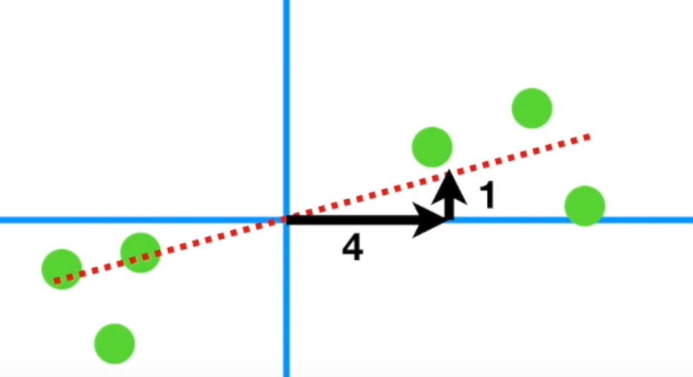
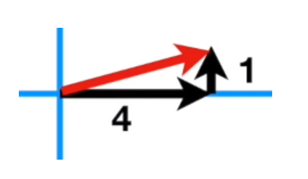
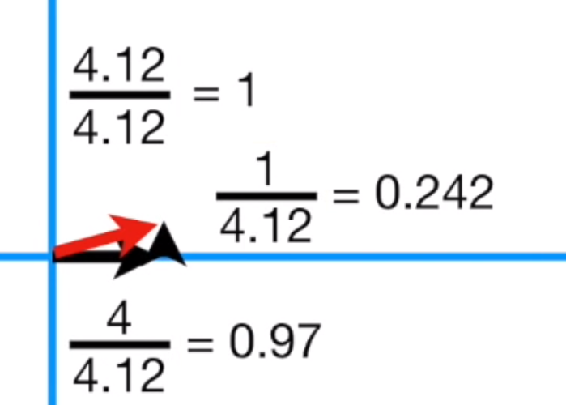
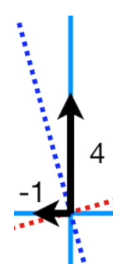
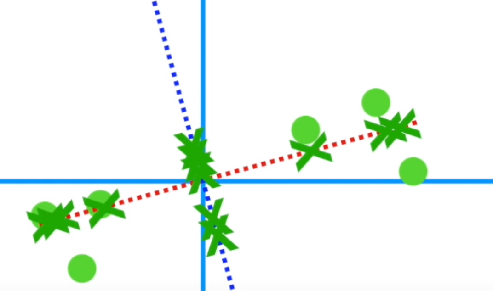
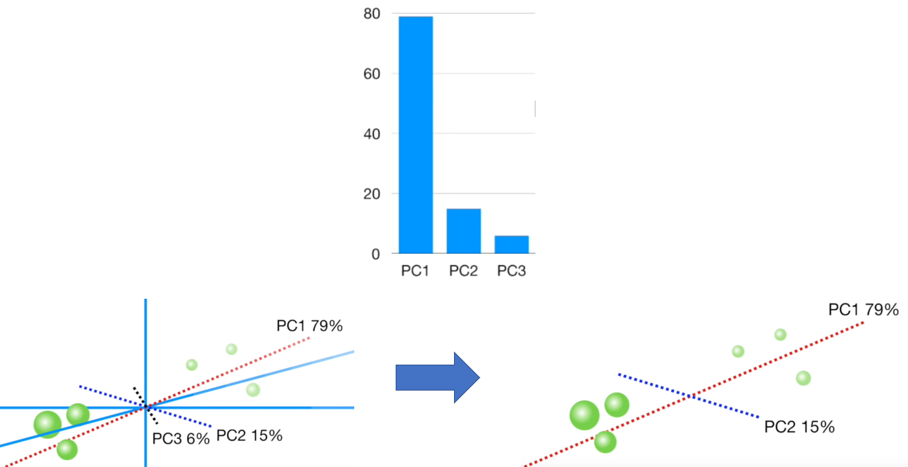
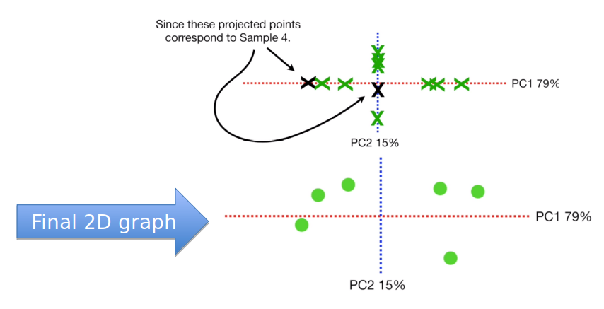

Pca
Principal Component Analysis
- We have learned some machine learning models. But those may not be enough for a practical problem.
- If you want to predict 2019 US GDP and you have tons of features available online, such as unemployment rate, inflation rate and so on.
- Should you use as many features as possible?
- How to select or generate the useful features?
- Check this three questions
- Do you want to reduce the number of variables, but aren’t able to identify variables to completely remove from consideration?
- Do you want to ensure your variables are independent of one another?
- Are you comfortable making your independent variables less interpretable?
-
If your answers are “yes” for all these three question, use PCA to reduce the data dimensionality.
- Based on: https://towardsdatascience.com/a-one-stop-shop-for-principal-component-analysis-5582fb7e0a9c

figure 1What is dimensionality reduction? 3D world -> 2D movie
- Let’s learn how to PCA to do dimensionality reduction.
- What is dimensionality reduction? 3D world -> 2D movie Figure
- Based on: https://www.youtube.com/watch?v=FgakZw6K1QQ

figure 2When shifting, the highest data point is still the highest
- Shifting: subtract all points with the new origin point.
-
Shifting will not change the relation between your data points. E.g., highest data point is still the highest. Figure
- Two methods to fit the red dot line:
- Minimize RSS (i.e. black dot arrow line), similar to linear regression
- Maximize the distances between green cross and origin
- The final line is called Principle Component 1 (PC1) Figure

figure 3The final line is called Principle Component 1 (PC1)
- If our fitted line slop is 0.25, it means every 4-unit growth along x-axis will have 1 unity increasement along y-axis, i.e. gene one plays a more important role to describe data.

- If we want to use a vector to represent the slop 0.25, it will be the red one (4.12) in the following image:

- If we want to scale the red vector into length one (unit factor), it will be like the following:

- The slop is not changed after this step. The unit factor is called “singular vector” or “Eigenvector” for PC1. Contains 0.242 gene 2 and 0.97 gene 1.

figure 4 PC2 is much easier to get. Just a perpendicular line through origin
-
PC2 is much easier to get. Just a perpendicular line through origin Figure
-
Similarly, we can calculate the PC2 eigenvector, which contains -0.242 gene 1 and 0.97 gene 2:


figure 5 We need to rotate PC1 (red line) and PC2 (blue line).
-
After we have PC1 and PC2, we can use PC1 and PC2 to have a new coordinate system to redefine our data. We need to rotate PC1 (red line) and PC2 (blue line). Figure
-
Now we have our PCA graph done using Singular Value Decomposition (SVD)

- Eigenvalue (squared sum distances) calculations: PC1 eigenvalues sum of \(xi^2\). PC2 eigenvalues sum of \(yi^2\). Figure

Figure 6 Eigenvalue (squared sum distances) calculations: PC1 eigenvalues sum of \(xi^2\). PC2 eigenvalues sum of \(yi^2\)
- Then we need to calculate variations for both PC1 and PC2
- Eigenvalue (squared sum distances) comparison: Scree plot left bar chart (PC1 variation vs PC2 variation) Figure

Figure 7 Scree plot left bar chart (PC1 variation vs PC2 variation)
- OK, let’s come back to dimensionality reduction. If we have three dimensions and want to show data in 2D: Figure

Figure 8 dimensionality reduction shown as 2D data
- First, draw the Scree plot. Based on the plot, PC1 and PC2 are important. So we will ignore PC3.

- Last step, we place our sample data points into PC1 and PC2 coordinate system based on their projection points (green cross) on PC1 axis and PC2 axis.

| Index | Prev | Next |